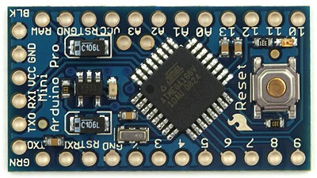

Njord Project
Build an awesome drone from scratch
Préparatifs
Dans le premier article nous vous avons expliqué l'idée de notre projet. Depuis la dernière fois nous sommes passé au concret, en commençant par modéliser le drone. Nous allons, par le biais de ce deuxième article, vous présenter le matériel que nous avons choisi et le montage prévu.
Devis
Nous avons commencé par nous renseigner sur ce qui se fait en matière de drones. Il faut savoir qu'il en existe de plusieurs types, des petits, des grands, des appareils avec un vol "agressif" (rapide et agile), d'autres avec un vol optimisé pour la prise de vues, certains avec un vol dit "hybride", etc. Pour l'application que nous voulons faire nous avons plutôt besoin d'un drone avec un vol hybride. Nous comptons dessiner la topographie d'une zone, pour cela nous comptons mettre en place un capteur ultrason qui mesurera la distance entre le drone et ce qu'il y a en dessous. Nous n'avons donc pas besoin d'un vol assez lent pour faire des prises de vues, mais il ne faut pas que le drone soit trop rapide afin de prendre le plus d'informations possible. De plus, pour des questions pratiques, il serait intéressant que le drone ait assez d'autonomie pour ne pas demander que sa batterie soit rechargée pendant une session d'analyse.
Parmi les drones déjà existants, le Crazyflie de chez Bitcraze nous a intéressés par sa petite taille, par le fait qu'il soit libre et qu'on puisse facilement acheter tous les composants séparément.
Nous avons donc décidé de baser notre modèle sur ce petit drone. Plus concrètement, le nôtre aura une taille similaire au Crazyflie et disposera de la même batterie, des mêmes moteurs et des mêmes pales mais le reste des composants seront différents. Nous ne voulons pas passer directement par un Crazyflie, car un de nos objectifs est de construire le robot d'A à Z. De plus ce modèle n'est pas tout à fait adapter à ce que nous voulons faire. Donc dans tous les cas nous serions obligés de le modifier.
Au début de notre année scolaire, nous avons eu un séminaire pour nous apprendre le langage Arduino. Nous avons pu découvrir un langage vraiment simple à prendre en main lorsque l'on a déjà quelques bases en programmation avec des langages comme le c. Nous nous sommes donc tourné vers les technologies proposés par Arduino pour le choix du microcontrôleur. Finalement, nous avons opté pour une Arduino Pro Mini. Le principal intérêt de cette carte se trouve dans sa petite taille et sa légèreté, 18x33 mm pour 2g. De plus elle propose un nombre suffisant de broches analogiques et Pulse With Modulation (PWM). Par contre nous aurons peut-être besoin d'utiliser un décodeur pour compenser le manque de broche numérique.
Il est important de disposer d'une technologie pour assister le drone à se stabiliser. Pour cela, ce dernier doit connaître "en permanence" son angle d'inclinaison. Nous avons donc besoin d'un gyroscope. Le large catalogue de modules Arduino propose une pièce qui fournit un gyroscope et un accéléromètre, le MPU-6050. Ce module a une taille et un poids similaires à ceux du microcontrôleur, 25,5 x 15,2 mm pour 1,5 g. Nous allons expliquer juste après pourquoi nous avons besoin d'un accéléromètre.
Pendant un certain moment nous nous sommes demandé comment nous pourrions connaître la position de notre drone dans l'espace. Naturellement nous avons pensé au GPS, mais la précision de ces technologies (pour rester dans un budget abordable) n'est clairement pas assez précise. Bien entendu, dans le cadre où le drone devrait faire son analyse en extérieur sur une zone assez grande, les GPS sont intéressants. Mais notre drone devra simplement analyser une salle de classe, alors une précision "au mètre près" est beaucoup trop large. Nous aurions plutôt besoin d'une précision de l’ordre du décimètre. Une autre solution a été évoquée, créer notre propre système de localisation, en créant une triangulation à l’aide d’un réseau d’antennes. Toutefois, pour des raisons de coûts et de poids, cette solution ne nous semble pas viable sur notre drone.
Finalement une connaissance, nous a conseillé de travailler avec un accéléromètre. Un accéléromètre est un module permettant de mesurer l'accélération linéaire d’un système. En connaissant l'accélération de notre drone, il sera alors possible de déterminer sa vitesse et donc, ses déplacements dans l’espace. Nous avons donc choisi de nous tourner vers cette solution.
Comme expliqué dans le premier article, le drone devra communiquer avec un serveur. Il nous a donc fallu choisir une technologie pour remplir cette fonctionnalité. Nous avons dans un premier temps pensé à utiliser des modules XBee, qui utilise le protocole de communication sans fil, défini par le standard IEEE 802.15.4. Les modules Xbee étant relativement chers (25€), nous nous sommes penchés vers une autre technique. Nous avons finalement opté pour un module de transmission 2.4GHz. Comme pour les autres composants que nous avons choisis, il est bon marché (0,8€) et d'une taille de 15x29mm pour 2g.
Nous avons finalement opté pour un module de transmission 2.4GHz. Comme pour les autres composants que nous avons choisis, il est bon marché (0,8€) et d'une taille de 15x29mm pour 2g.

La plupart des drones implémentent un Electronic Speed Controller (ESC) pour chaque moteur. Ces composants servent à contrôler la vitesse du moteur ainsi que son sens de rotation. Il faut savoir qu'un ESC vaut environ 15€. Ce qui fait 65€ pour un quadcopter. Outre le prix important de ces modules, le poids de ces modules (25g/module) nous oblige à nous orienter vers d’autres solutions. A l’aide d’un MOFSET, de composants basiques (condensateurs, résistances,...), ainsi que l’arduino, il nous est possible de creer notre propre ESC.

Pour récapituler, voici une liste des technologies qui vont composer notre drone :
- Moteurs du crazyflie (2,30€ unité)
- Batterie du crazyflie (4€)
- Pales du crazyflie (4€ le lot)
- Arduino Pro Mini (4€)
- Accéléromètre + Gyroscope (3€)
- Transmetteur 2.4GHz (0,8€)
- MOFSET (0,4€ les 10)
Avec les technologies choisies, on s'en sort pour environ 25€ de composants pour un drone. Le kit complet du crazyflie coûte environ 120€. Toutefois, ce premier drone ne sera sûrement qu'un prototype. Il nous faudra voir ce que nos choix donnent en pratique. Nous comptons sur le fait que le nôtre soit plus lourd (environ 35 g) que le Crazyflie (19 g) pour se ramener à un vol un peu moins agressif.
Schéma et PCB
En attendant de recevoir les pièces choisies. Nous avons commencé à faire le schéma électrique du robot ainsi que le PCB :


Nous avons créé ces montages à l'aide du logiciel Fritzing. C'est un logiciel libre qui permet de concevoir des circuits imprimés graphiquement. Il est ensuite possible de faire imprimer les montages à partir des fichiers générés par ce logiciel.
Vous pouvez télécharger notre montage en suivant ce lien : Circuit électrique du drone.
Tout comme le Crazyflie, notre drone ne possèdera pas de châssis à proprement dit. C'est le circuit lui-même qui fera office de châssis. L’ensemble sera bien évidemment plus vulnérable et moins solide. Toutefois, le gain de poids et de temps nous permet d’estimer ces risques comme acceptables. De plus, nous supposons que la mission de notre drone (cartographier une zone) limitera le risque de chocs (qui sont en général la conséquence d'une vitesse trop importante ou d'acrobaties). Cependant, ce choix d’absence de châssis pourra être remis en question si le drone s’avère trop fragile pour effectuer sa mission.
Maintenant que vous connaissez l’ensemble des pièces de notre drone, ainsi que nos choix technologiques, il est temps de le fabriquer. Mais ceci sera pour le prochain article.